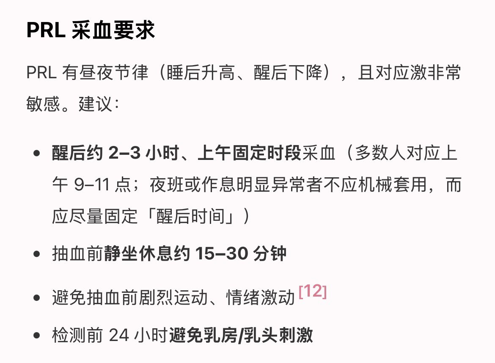
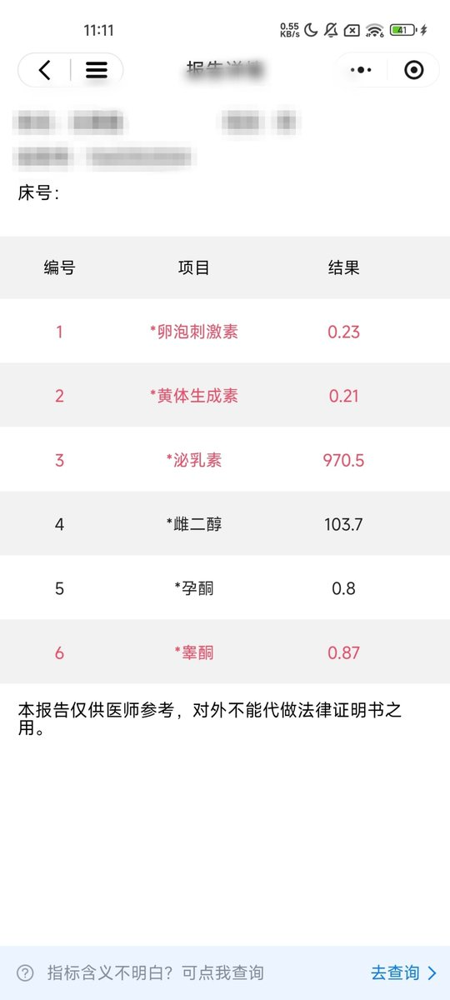
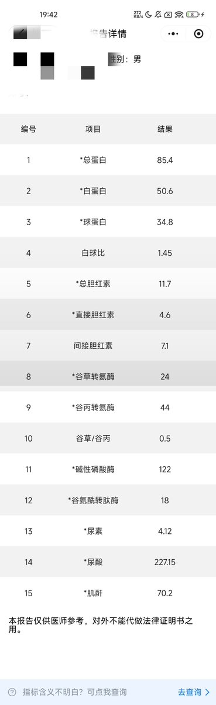

翅翅膀喵喵喵喵喵
@axzameyzed
@MEMZFuHua 怎么一个个都光给数不给单位，你这个泌乳素是质量浓度还是生物活性浓度，质量浓度的话那太离谱了，生物活性浓度的话其实还好，属于正常轻度升高
然后泌乳素采血还有一定要求，这样测出来更规范



MEMZ-FuHua🍥🏳️⚧️
@MEMZFuHua
泌乳素高的有点恐怖啊，目前来看四天12.5毫克是能把睾酮压住的，和之前两天12.5的指标几乎一样，就按这个剂量来吧，好在肝肾功能都没问题 https://t.co/MA1hPyqaav